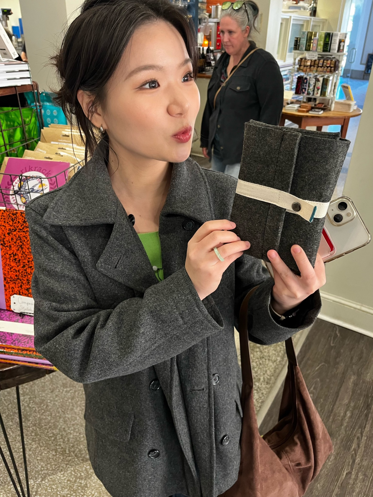

JIYI CHOI

Freshman in Greenville, South Carolina
I am a freshman at Bob Jones University majoring in Business Administration. I work at the Dining Common as a student worker and baker.
I am a member of Korean Grace Church. My favorite website is The National Museum of Korea.
I enjoy watching movies, traveling, and thrifting.
My favorite foods and drinks are Pad Thai, Ciao Lime, and Ginger Ale.
My goals are to keep growing, become a person who reflects God's love, and succeed in real data analytics projects.
You can email me at jchoi051@students.bju.edu
EDUCATION
Business AdministrationBob Jones University
Greenville, South Carolina